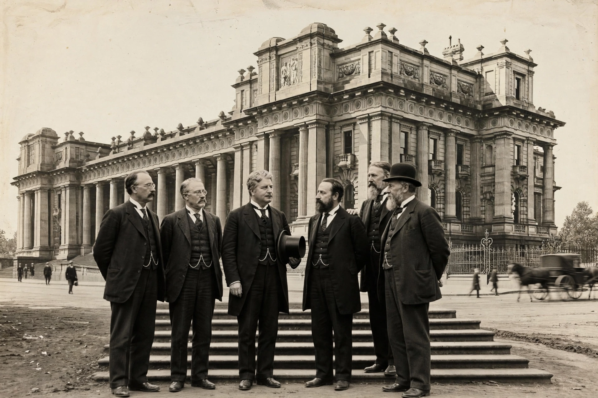

The Barton Government was the first federal executive government of the Commonwealth of Australia, led by Prime Minister Edmund Barton from 1 January 1901 to 24 September 1903.

Formed at Federation, the government established the new Commonwealth's institutions, passed the Immigration Restriction Act 1901 (the basis of the White Australia policy) and the Pacific Island Labourers Act, and oversaw the first federal election in March 1901, which the Protectionists won without a majority. Barton resigned in 1903 to become a founding justice of the High Court, succeeded by Alfred Deakin.